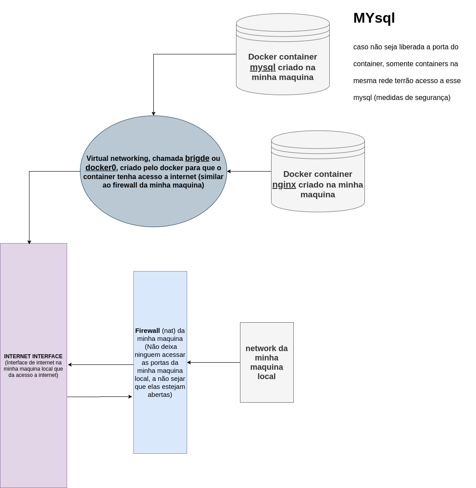

docker container run -p (especifica em qual porta vai rodar -p)
docker container port (containerName) (verificar a porta de um container)
docker container inspect --format '{{ .NetworkSettings.IPAddress }}' (containerName) (Eibir informações do container formatado)
docker container run -it --name nginx nginx bash (Iniciar um container interativo e entra no bash do container para que possamos rodas comandos dentro do container criado
